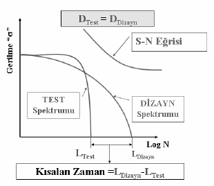

|
Timuçin Bayram, Prototip ve Test Müdürü
Mustafa Latif Koyuncu, Test Uzmaný
Uzel Makine San. A.Þ.
Haziran 2008, Ýstanbul
Not: 01-04 Haziran 2008'de düzenlenen OTEKON'08 4. Otomotiv Teknolojileri Kongresi'nde sunulmuþ bu çalýþma, Eylül 2008'de TurkCADCAM.net Portalýndan yayýnlanmaya baþlamýþtýr.
Özet:
Bu çalýþma, traktör saha testlerinin daha hýzlý ve daha az maliyetle nasýl gerçekleþtirilebileceðini araþtýrmak için yapýlmýþtýr. Deðiþik yol ve tarla þartlarýnda traktör üzerinden toplanan verilerin laboratuar ortamýnda yapýlacak teste aktarýlmasý esas alýnmýþtýr. Çalýþmanýn temeli olan birikimli hasar metotlarýndan Palmgren-Miner Teorisi ele alýnarak proje konusu traktörün kullaným profiline baðlý olarak deðiþen çalýþma þartlarýnýn oranlarý belirlenmiþtir ve traktör normal çalýþtýrýlarak yol verileri (maruz kalýnan ivme deðerleri) toplanmýþtýr. Veri toplama iþleminin sonunda proje konusu traktörün nasýl bir yüklenmeye maruz kaldýðý ortaya konulmuþtur ve ömür deðerleri hesaplanmýþtýr. Bulunan ömür deðerlerinin yorumu yapýlmýþtýr. Elde edilen sonuçlara eþdeðer hasar etkisini proje konusu traktör üzerinde oluþturulacak test pisti kurularak Hýzlandýrýlmýþ Ömür Testi Uzel'de uygulanmýþtýr.
Anahtar kelimeler: Traktör, kullaným profili, veri toplama, birikimli hasar, eþdeðer hasar
1. Giriþ
Otomotiv endüstrisi, dünyada hýzla geliþen ve deðiþen sektörlerden biridir ve ekonomik olarak birçok ülkede ilk sýrada yer almaktadýr. Otomobil üretmek artýk sadece kullanýcýlarýn ihtiyaçlarýný karþýlamak için olmamaktadýr, bu sebeple üreticiler rakipleriyle boy ölçüþebilmek ve dahil olduklarý pazardan daha büyük pay alabilmek için sahip olduklarý parametreleri deðiþtirmek zorundadýrlar. Bu parametreler þirketlerin kendi içlerinde oluþturduklarý stratejiler ile birbirinden farklýlýk gösterse de sektörde ilk sýralara çýkabilmek için pazara hakim olabilmek gerekmektedir. Ýlk akla gelen ve en çok uygulanan yöntem maliyetlerin düþürülmesidir, önemli olan maliyetin nasýl düþürüldüðüdür. Maliyetleri düþürmek için parçalarý daha ucuza temin etmek veya çalýþanlarýn ücretlerini daha düþük tutmak yeterli gibi gözükebilir, fakat bu yöntemler herkesin kolaylýkla baþvurup, gerçekleþtirebileceði yöntemlerdir ve kalite problemleri yaþanmasý riski yüksektir.
Kullanýcýlara daha kaliteli ve kullaným þartlarý daha iyi tanýmlanabilen araçlar üretmek, otomotiv sektöründe üzerinde çalýþýlan konulardýr. Üretilen araçlarýn tasarým aþamalarý uzun zaman almaktadýr ve ürün tasarým onayý için yapýlan testler hem yüksek maliyetli hem de uzun süreli olmaktadýr. Test sürelerinin uzun olmasý sonuçlarýn elde edilmesini geciktirir ve tabiî ki bu gecikme tasarým deðiþikliklerini de geciktirmektedir.
Bir araç için en önemli ömür testi aracýn gerçek sahada, gerçek þartlarda test edilmesidir. Tahmin edilebileceði gibi bu þekilde bir ömür testinin yapýlmasý süre olarak uzun olmasýnýn yanýnda yüksek maliyet gerektirir.
Günümüz ürün geliþtirme konseptinde araç, gövde ve bileþenlerinin yorulma ve ömür kavramlarý ön plana çýkmaktadýr. Bir aracýn tasarýmýnýn gerçekleþtirilmesinde
ürün ömrünün belirlenmesi veya biçilen ömür içerisinde bütün fonksiyonlarýný yerine getirmesi o üründen istenen temel özelliktir. Ürün Geliþtirme ve yeni ürün tasarým süreçlerinin kýsaltýlarak daha az maliyetle yapýlmasý ancak hýzlandýrýlmýþ ömür testleri ile gerçekleþtirilebilir. Þekil 1'de "Hýzlandýrýlmýþ Test Prosedürünü Ýçeren Ürün Geliþtirme Süreci" ile "Genel Ürün Geliþtirme Süreci" arasýndaki zaman-maliyet eðrileri görülmektedir. [1]
Þekil 1. Ürün geliþtirme süreci. Maliyet düþürme Ürün Geliþtirme süreci ile iliþkilidir.
Tasarým deðiþikliklerinin en erken sürede yapýlmasý Ürün geliþtirme maliyetlerine olumlu yansýmaktadýr.
Proje konusu araç traktör olduðu için, kulaným amacý ve kullaným þartlarý göz önüne alýnarak traktörün kullanýcý profili belirlenmiþtir. Elde edilen kullanýcý profiline göre traktör gerçek sahada ve test pistinde test edilerek, traktör üzerinden ivme deðerleri toplamýþtýr. Toplanan ivme deðerleri yapýlan kabuller ile gerilme gibi düþünülmüþ ve GlyphWorks programýnda iþlenerek rainflow matrisleri çýkarýlmýþtýr. Rainflow, Gerçek saha ve test þartlarýnda elde edilen gerilme verilerinden çevrim sayýlarýnýn tespit edildiði sayma yöntemidir. Toplanan verilerdeki gerilme deðerlerini süzerek düzensiz olan zaman serilerini düzenli çevrim sayýlarýna dönüþtürür.
Farklý yüklere (gerilmelere) maruz kalýnmasý durumunda, Wöhler diyagramý üzerinde eþdeðer ömrü bulmak için, çeþitli metotlar kullanýlýr. Bunlarýn en çok kullanýlaný Palmgren-Miner metodudur. Farklý yüklerdeki çalýþma süreleri ve bunlara karþýlýk gelen ömürler Tablo 1'deki gibi olursa Palmgren-Miner denklemi (1) eþitliðindeki gibi olur.
(1)
Tablo 1. Farklý Yüklerdeki Çalýþma süreleri ve Ömürler
Bir parçanýn sadece gerilmesinde çalýþmasý durumunda ömrü N1 olmaktadýr. Fakat gerilmesinde kadar (belirli bir yük tekrarý) çalýþmýþtýr. Diðer þartlarda ayný þekildedir. (1) eþitliðinin sað tarafýndaki K deðeri, 0,7K2,2 arasýndadýr. Hesaplamalarda tavsiye edilen deðer ise K=1'dir. [2]
Çalýþma yüzdelerini göz önüne alarak (1) eþitliði tekrar yazýlýrsa;
Toplam ömür: N
Belli bir yükteki çalýþma yüzdesi: C
olmaktadýr. (1) eþitliðinde yerine yazýlýrsa, Palmgren-Miner denklemi (2) ve (3) eþitliklerindeki gibi olur (K=1). [2]
(2)
(3)
Palmgren-Miner metoduna göre eþdeðer test yükleri belirlenmiþtir. Eþdeðer test yüklerinin hesaplanmasý ile test süresi kýsaltýlarak traktörün saha testi yerine laboratuarda - test pistinde - testi hýzlandýrýlmýþ olarak gerçekleþtirilmiþtir.
2. Hýzlandýrýlmýþ araç testi metotlarý
Hýzla geliþen teknoloji ile otomotiv sanayinde müþteri memnuniyeti artmakta, kaliteli araçlar üretilmekte ve pazara çýkýþ süreleri kýsaltýlmaktadýr. Saha testleri yerine yapýlan hýzlandýrýlmýþ ömür testleri ile test cevaplarý daha erken alýnmakta ve ürün geliþtirme süreçlerinde müdahale erken yapýlmaktadýr, bu sayede ürün geliþtirme süreçleri kýsalmakta ve ürün tasarýmýnýn onaylanmasý daha kýsa sürede olmaktadýr. Araç saha testleri Þekil 2'de görüldüðü gibi üç yöntem ile yapýlabilir. [1]
Þekil 2. Hýzlandýrýlmýþ Araç Testleri Yöntemleri
1. FEA Analiz
Aracýn üç boyutlu modelinin bilgisayar ortamýnda Sonlu Elemanlar Yöntemiyle test edilmesi
2. Laboratuar ortamýnda veya Hýzlandýrýlmýþ test pistinde test
Diðer bir test yöntemi, belirli yol kalitelerinden meydana gelmiþ özel pistlerde (bumptrack/roughtrack) veya laboratuarda aracýn test edilmesidir. Günümüz otomotiv sanayinde gerçek yol verileri kullanýlarak hýzlandýrýlmýþ yorulma ömrü testleri ürün geliþtirme aþamasýnda yaygýn olarak uygulanmaktadýr. Bu þekilde zaman süreci belli ölçülerde azaltýlmýþ olmaktadýr.
3. Gerçek sahada test
Bu yöntemlerin en basiti, aracý belirlenen yol güzergahlarýnda öngörülen kilometre kadar kat ederek test etmektir. Aracýn sahada test edilmesi basit olmasýna nazaran oldukça zaman alýcý, pahalý ve tekrarlanabilirliði hemen hemen imkansýz bir süreçtir.
Hýzlandýrýlmýþ ömür testlerinde komple araç, komponent ve alt sistemlere uygunluk temel amaçlardýr. Test, gerçek sahadaki hasarlarý oluþturabilmeli ve hýzlandýrýlabilmelidir. Bir aracýn ömrü boyunca maruz kalacaðý çalýþma þartlarý sonucunda oluþacak yorulma etkisinin saptanarak ayný etkiyi oluþturacak test þartlarýnýn belirlenmesi suretiyle deney süresi istenilen oranda ayarlanabilmektedir.
Gerçek sahadan gelen yorulma etkisi "Dizayn Spektrumu" olarak ele alýnýr ve ayný yorulma özelliðini verecek hýzlandýrýlmýþ sinyaller de "Test Spektrumu" olarak tanýmlanýr. "Dizayn spektrumu"nun hasar etkisi "Test Spekturmu"na eþit olmalýdýr. Hýzlandýrýlmýþ yol þartlarýnýn (sinyalinin) üretilebilmesi için gerçek saha ve test sahasý verilerine ihtiyaç vardýr. [4]
"Dizayn spektrumu" aracýn deðiþik kullanýcý bölgelerindeki saha kalitelerinde maruz kalacaðý düzensiz saha titreþimleri sonucunda oluþan yorulmanýn etkisinin saptanmasýndan meydana gelmektedir. "Test spektrumu" elde ederken, yüksek gerilme deðerlerinin yoðunluðunun arttýrýlmasý veya baþka bir deyiþle, araca ayný hasar etkisini verecek daha yüksek gerilme genliði titreþimlerine maruz býrakýlmasý gerekmektedir.
Örnek olarak Þekil 3'de Gerçek saha þartlarý ve hýzlandýrýlmýþ test þartlarý sýrasýndaki maruz kalýnan gerilme deðerleri arasýndaki fark görülmektedir. [4]
Þekil 3. Örnek Test Verileri. (a) Gerçek saha þartlarý ?-zaman sinyali (Saha þartlarýndan elde edilen gerilme genlik titreþimleri), (b) Hýzlandýrýlmýþ saha þartlarý ?-zaman sinyali (Test süresini kýsaltmak için daha yüksek gerilme genliði titreþimleri kullanýlmýþ )
Hýzlandýrýlmýþ sinyaldeki malzemenin sürekli mukavemet sýnýrýna yakýn bir gerilme deðerinin sinyal içerisindeki miktarý, gerçek yol pürüzlülüðündekinden daha fazladýr. Baþka bir deyiþle malzeme bu gerilme seviyesine daha fazla miktarda maruz kalmaktadýr. Dolayýsýyla yorulma hýzý artmaktadýr. Bu þekilde testin süresi kýsalmakta ve aracýn gerçek saha þartlarýndan meydana gelen ömrüne eþdeðer bir ömür elde edilmektedir (Þekil 4).[4] Test prosedürü oluþturma ve test uygulamasý için genel olarak izlenmesi gereken yol Þekil 5'de görülmektedir.[3]

Þekil 4. Test spektrumunda gerilme deðerleri yoðunluðu arttýrýlarak test süresi kýsaltýlmýþtýr.
DTest: Test spektrumu hasar etkisi, DDizayn: Dizayn spektrumu hasar etkisi.
Þekil 5. Hýzlandýrýlmýþ Araç Testi Aþamalarý
|